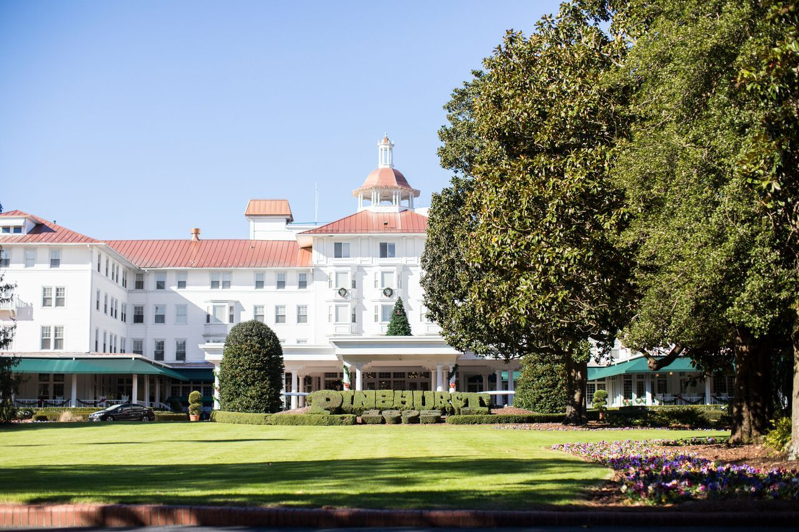

Peter Kisver
Founder of Kiaros Advisors. Neighbor, husband, father of three, and a believer that most good financial decisions start with an unhurried conversation.

More than twenty years of sitting across the table.
I’ve spent over 20 years in the financial services and insurance industry, working in wealth management, financial planning, and portfolio analysis. The technical side of the work matters. But what has kept me in it is the people.
What I enjoy most is educating and assisting individuals and families as they pursue their financial goals and work to preserve their lifestyle in retirement. I like explaining things until they make sense. I like it when someone leaves a meeting feeling lighter than when they arrived.
I studied finance at Pennsylvania State University, where I earned my Bachelor of Science in 1996.
Away from work, you’ll find me on a golf course or at home in Pinehurst with my wife, Tamara, our three children, and our two dogs.
“Helping you achieve your financial goals and maintain your lifestyle into retirement is not just my job, it’s my purpose.”
Peter Kisver
A few things I’ve learned along the way.
Listening comes first.
Everyone’s circumstances are different. Before we talk about investments or retirement dates, I want to understand what you’re hoping for and what worries you.
Understanding beats persuasion.
You should never have to take my word for it. My job is to explain your options clearly enough that the decision feels like your own.
Patience is a strategy.
Investing takes discipline and time, not short-term gambles. Much of my work is helping people stay steady when the news is loud.
Advice is a relationship.
A plan is only useful if someone is around to help you live with it. I intend to be that person for the people I serve.
Kiaros Advisors
Kiaros Advisors, LLC is an independent registered investment advisory firm based in Pinehurst, North Carolina. I started it to offer the kind of advice I would want for my own family: personal, clearly explained, and free of pressure.
Being independent means that when you work with Kiaros, you work with me.
I’d welcome the chance to meet you.
If you’re looking for someone to talk with about your financial future, let’s find a time.